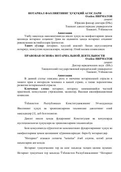

NFO'zbekistonda notarial faoliyatning huquqiy asoslari va uning ahamiyati haqida ilmiy maqola.
Ushbu maqolada O'zbekistonda notarial sohaning inson huquq va manfaatlarini himoya qilishdagi o'rni hamda ahamiyati tahlil qilinadi. Muallif notariatning huquqiy asoslari, notariuslarning faoliyat prinsiplari va sohaning rivojlanish istiqbollarini ilmiy nuqtai nazardan yoritib beradi.